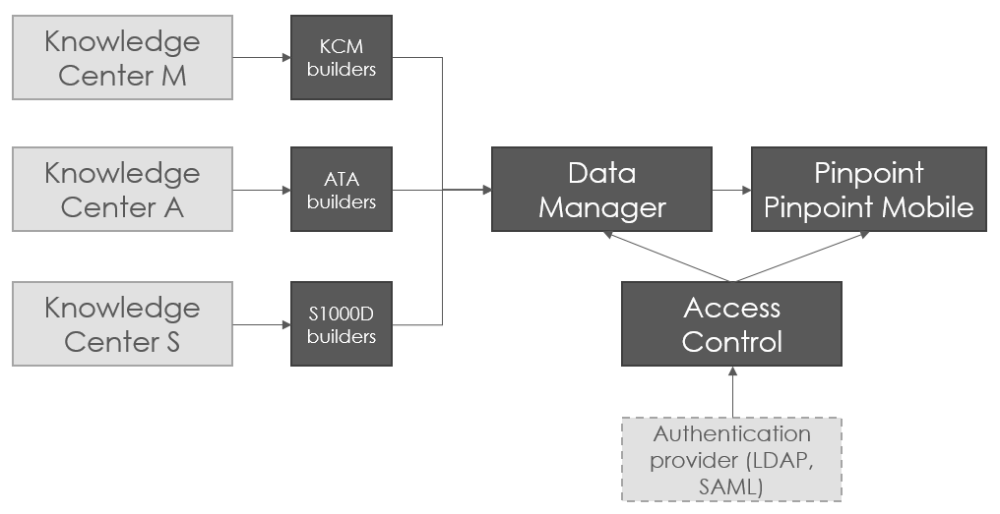
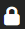

Flatirons Pinpoint
Flatirons Pinpoint se compose de plusieurs modules qui travaillent ensemble pour présenter les publications techniques de divers formats dans un navigateur Web. Comme illustré dans le schéma ci-dessous, le visualiseur peut afficher des publications provenant de sources multiples:

Architecture du Flatirons Pinpoint
Avec Data Manager et la configuration appropriée,, Pinpoint peut afficher les publications créées dans Knowledge Center A, M, et S. Data Manager prend également en charge l'importation de packages dans Knowledge Center S.
Flatirons Pinpoint peut être déployé en version serveur ou en version autonome. Dans la version serveur, les composants du système sont installés dans un ou plusieurs serveurs. Plusieurs utilisateurs peuvent se connecter au système en même temps, tant qu'ils ont les autorisations appropriées dans le module Access Control.
- Un Pinpoint Standalone où les composants logiciels sont regroupés pour pouvoir être démarrés et exécutés sur un seul ordinateur, par exemple dans un véhicule ou un avion. Il n'y a généralement qu'un seul compte utilisateur sur ce type.Il est toujours possible pour ce type de Pinpoint Standalone de se synchroniser pour obtenir des mises à jour d'un Data Manager de données distant.
- Un Pinpoint Standalone installé sur un système d'entreprise avec un réseau intranet local qui ne dépend pas d'accès Internet extérieur. Plusieurs utilisateurs peuvent se connecter à l'aide d'un navigateur Internet standard à partir de différents ordinateurs ou le même ordinateur.
Pinpoint Standalone Light est une variante créée à partir de Pinpoint Standalone après avoir rempli les manuels requis. Il ne peut pas être mis à jour via la synchronisation à distance. Toutes les mises à jour doivent être générées à partir de Pinpoint Standalone et redistribuées de nouveau. Cette version allégée contient uniquement les composants nécessaires pour se connecter et afficher le contenu, ce qui signifie qu'elle est plus petite et plus rapide à démarrer. Il inclut un utilisateur en lecture seule et n'inclut pas la fonctionnalité de gestion des utilisateurs / groupes ou privilèges.
Comme mentionné précédemment, Flatirons Pinpoint est composé de plusieurs modules. Vous pouvez en savoir plus sur ces modules en lisant les sections ci-dessous
Flatirons
Pinpoint
Viewer

Le guide de l'utilisateur que vous êtes en train de lire est pour Flatirons Pinpoint Viewer (à partir de ce point, il est appelé Viewer). Il permet aux utilisateurs de lire, naviguer, rechercher, filtrer, imprimer et faire d'autres opérations avec des publications en utilisant un navigateur Web.
Flatirons
Pinpoint - Data Manager

Non applicable pour Pinpoint Standalone Light.
Flatirons Pinpoint - Data Manager, (à partir de ce point, il est appelé Data Manager)est un outil basé sur le Web pour le stockage et l'extraction de données dans un format appelé Pinpoint Neutre. Le format neutre Pinpoint est un format propriétaire de Flatirons Solutions. Lorsqu'une publication a été publiée dans le Data Manager, les utilisateurs peuvent accéder et lire la publication dans le Viewer.
Builders
Le Data Manager est livré avec différents Builders tels que S1000D Builder, qui prend un fichier de données Pinpoint, ou le builder A350, qui va chercher les données du Knowledge Center CMS. Les différents builders peuvent être sélectionnés lors de l'installation. D'autres builders peuvent être développés par Flatirons Solutions, par un client ou par un tiers. Ils sont déployés sur des serveurs et connectés au Data Manager.
Après le traitement d’une publication PDF dans le Data Manager, le PDF est affiché dans la zone d'affichage de contenu texte. Quel plugin (Adobe ou PDFJS) est utilisé pour ouvrir le fichier PDF dépend des paramètres du navigateur.Access Control

Non applicable pour Pinpoint Standalone Light.
L'accès et les autorisations dans le Viewer et dans le Data Manager sont gérées dans le Flatirons Pinpoint - Access Control. Les administrateurs peuvent ouvrir l'Access Control en cliquant sur le icône dans l'en-tête d'application et donner des privilèges aux utilisateurs qui doivent visualer les donnees, publier et faire des mises à jour de configuration dans l'application.
Pour plus de détails sur la configuration des autorisations pour Pinpoint, reportez-vous à "Manage Permissions for Pinpoint Viewer" sujet dans leFlatirons Access Control Manager User Guide.
Logiciels Tiers requis
Flatirons Pinpoint Viewer ne prend pas en charge tous les types de formats d'image. Cela signifie que les formats non pris en charge doivent être convertis en un format pris en charge durant le process du Builder. La conversion de l'image se fait actuellement par deux applications des tierces:
-
EasyCopy pour convertir le format CGM en SVG.
- ImageMagick pour convertir TIFF en GIF.
EasyCopy et ImageMagick doivent être installés sur le serveur du builder si ces formats sont utilisés.
-
Le Version Oracle AutoVue Client/Server Deployment pour afficher les graphique du BRD / SCH / PCB. Pour plus d’informations sur la façon de le mettre en place, merci de contacter Flatirons.
- plug-in Adobe Flash pour l'affichage de graphiques au format SWF.
Navigateurs supportés
L'application prend en charge la version actuelle et la version antérieure pour ces navigateurs:- Chrome
- Edge Chromium
- Firefox
- Safari
- Opera
- Pour Chrome, vous pouvez résoudre ce problème en activant ce paramètre: "Effacer les cookies et les données du site lorsque vous fermez toutes les fenêtres". Cette option se trouve sous les .
- Pour Edge Chromium, vous pouvez résoudre ce problème en activant ce paramètre: "Cookies et autres données de site". Cette option se trouve sous .
- Pour Firefox, vous pouvez résoudre ce problème en activant ce paramètre: utilisez "Supprimer les cookies et les données du site lorsque Firefox est fermé". Cette option se trouve sous .